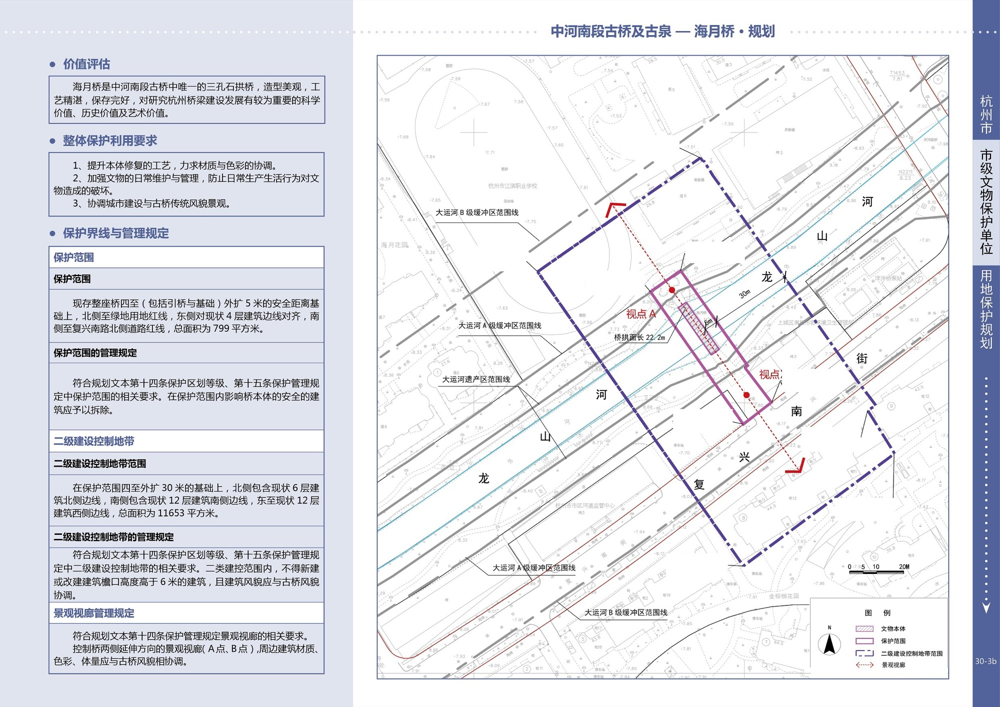
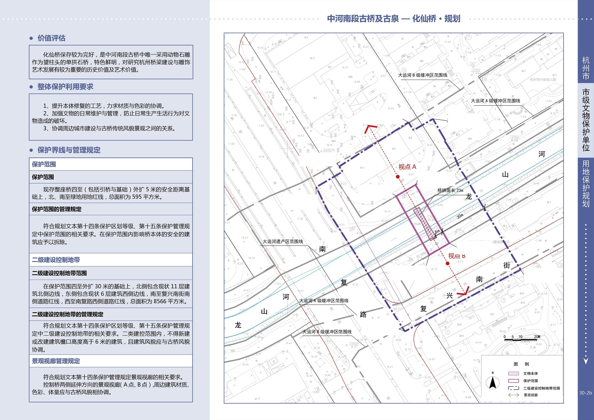
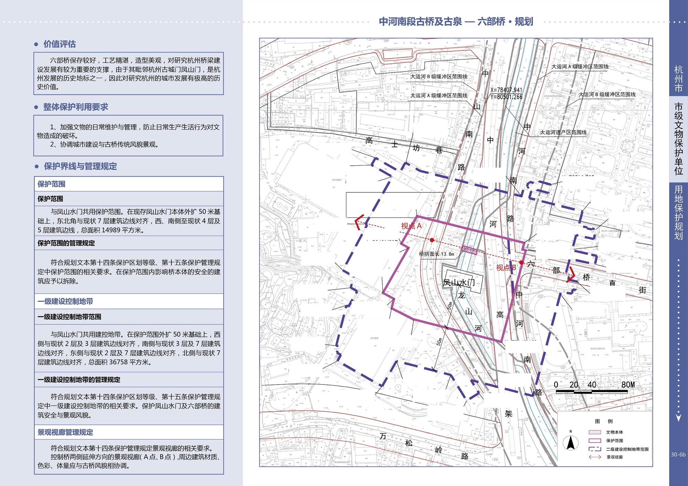
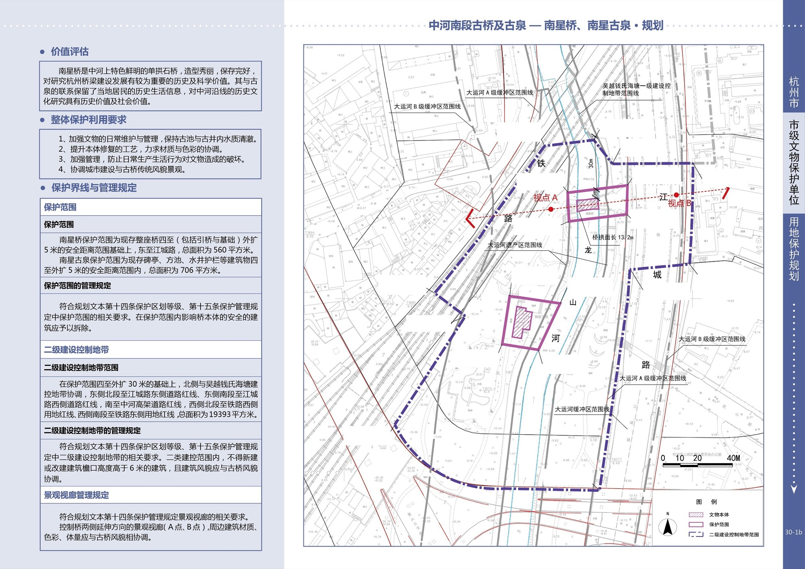
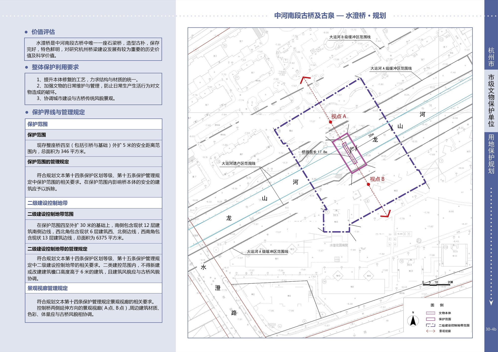
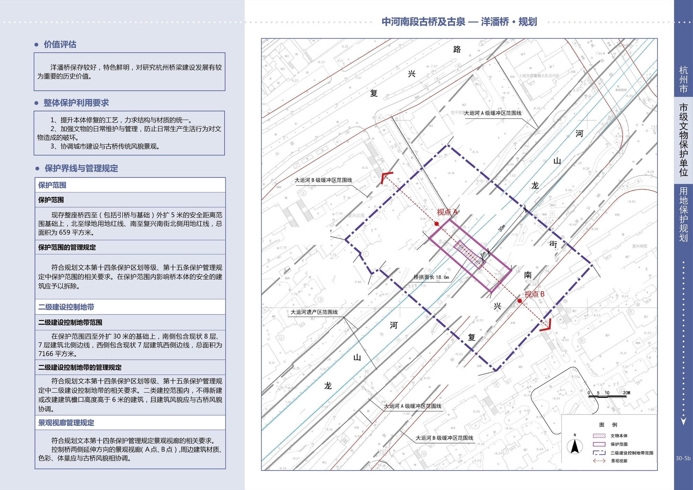

文物概况：
名 称：中河南段古桥及古泉
地 址：上城区六部桥直街至白塔间中河上
年 代：明、清
结 构：石质
类 别：古建筑
文物简介：
中河南段古桥及古泉包括六部桥、南星桥、洋泮桥、海月桥、化仙桥、水澄桥六座桥梁以及南星古泉。
六部桥为单孔石拱桥，始建于南宋，又名都亭驿桥。元代称为通惠桥，明代称为锦云桥，清代复称六部桥至今。现存的六部桥为清代重建。
南星桥为单孔石拱桥，具体建造年代不详，但至迟在南宋时就已经存在了。南宋时，南星桥又名“朱桥”、“南新桥”，清代称里横河桥。
南星古泉包括泉池1口，古井1口，碑2通。据碑文记载，泉发源于西湖南山，味厚而美，久旱不涸。泉池现已污染，不能饮用。南星古泉始建于太平军攻入杭州后（1861）。现存泉池据碑文记载进行过两次修缮：民国二十二年（1933）进行了重修,另一次修缮具体时间不详。20世纪90年代重新修整水池，并建亭保护。
洋泮桥为单孔石拱桥，南宋时已经存在，现桥重建于明万历二十年（1592）。
海月桥为三孔石拱桥，始建于明万历年间（1573～1620），现桥为清代重建。
化仙桥原为木桥，明成化十三年（1477）改建为单孔石拱桥。
水澄桥为三孔石梁桥，至迟于清康熙年间（1662～1722）已存，现桥为光绪二十六年（1900）八月重建。
· 点击查看大图 ·
     